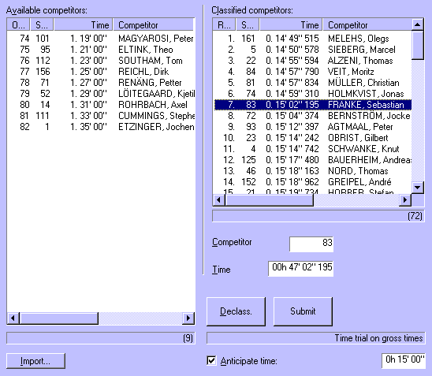

This tab sheet consists of two lists: available and classified competitors. The list of available competitors consists of all competitors who were not signed out at the start of the particular time trial and that are entered in the starting order for the time trial.

Time trial arrival tab sheet
Competitors can move from the available list to the classified list by entering their start no. and time. When Submit is clicked, the data is submitted and the competitor moves. Competitors are automatically ranked, based on the times that you enter. Depending on the time trial settings, the time you enter is used directly (net times mode) or the start time is subtracted first from the start time (gross times mode).
You can also select one or multiple competitors in the classified list, change their time and click Submit again to apply the entered time to the entire selection.
Note that (no matter what anticipated time setting you make) the gross time that you enter for a competitor must be more than the starting time that is going to be subtracted from the entered gross arrival time, in gross times mode. If not, the resulting time is unpredictable.
When you select one or multiple competitors in the classified list, and you click Declass., the competitors are moved back to the available list.
A lot of attention is paid to this tab sheet, because it is going to be used at the most critical moment of the time trial: the actual arrival. Therefore:
Note that rankings are always recalculated whatever you change in the this tab sheet, so that you always see the latest time trial ranking!
This function is only enabled for time trials on gross times.
You can inform the time trial arrival tab sheet about the approximate time that is expected for arrivals during this half stage. This is specifically done to compensate for clocks that are often used in timing that only display minutes and seconds and will overflow after each hour. If you enter the anticipated time that you expect, you can just enter an arrival time in the 0-60 minutes interval and StageRace will add full hours (or subtract them if you would enter a very large time value) until the time is close to the set anticipated time.
Fill this arrival tab sheet on basis of an external file using the advance import functionality.